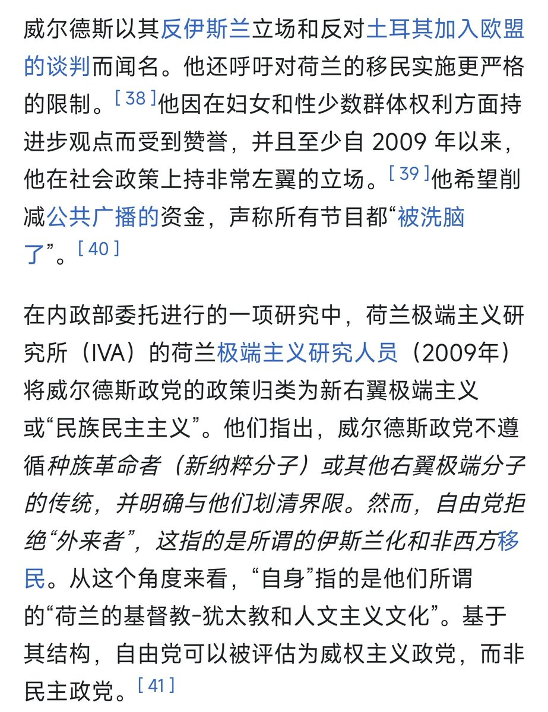
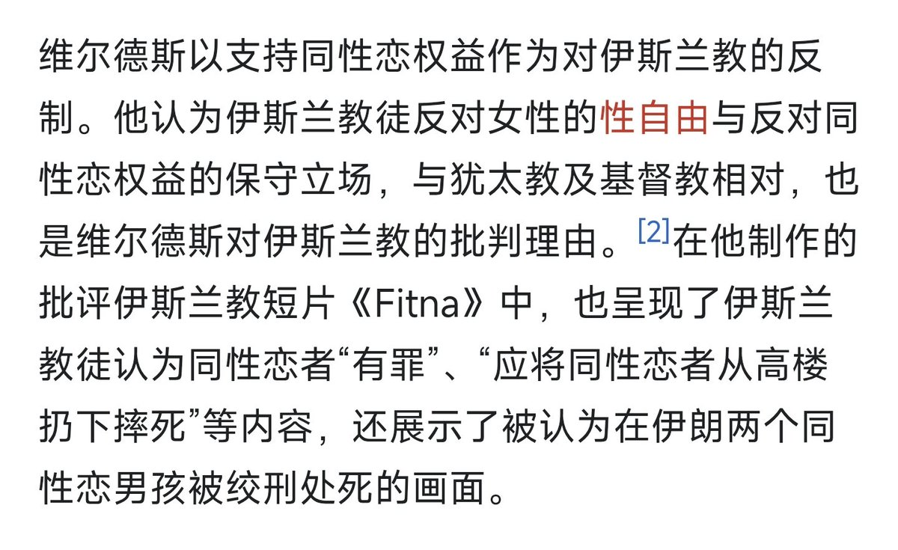

北雁冬翼（simone luxem）🏳️⚧️🏳️🌈🔬
@Simone_Luxem
@Moutai_H_Maple 狗哨罢了，特朗普还能说自己是为了“让美国再次伟大”呢，对于这些政客说瞎话比喝凉水还顺嘴


茅茅mtaiiiiii
@Moutai_H_Maple
@Simone_Luxem 话说你怎么看待荷兰极右翼的自由党，排外和歧视穆斯林，但他们的党魁给出的理由之一是“他们的伊斯兰价值观威胁了荷兰本土lgbt的安全”？ https://t.co/gKIz9tUkHo